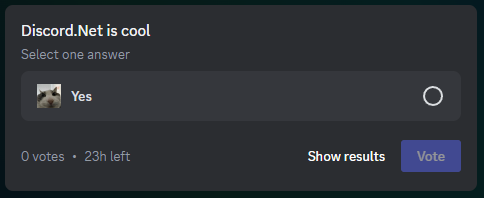

Polls in Discord.Net
Polls are... Polls!

This guide will explain how to use polls in your applications.
Note
To get contents of polls sent by users other than your bot you need to enable GatewayIntent.MessageContent intent.
Creating polls
A poll is part of a message; to send one you need to pass a PollProperties object into the poll parameter of any method that can be used to send messages. (ex. SendMessageAsync, RespondAsync, etc)
// Create a poll
var poll = new PollProperties
{
// Set the question
Question = new ()
{ // Text of the question
Text = "Discord.Net is awesome!"
},
// Set the duration of the poll in hours
Duration = 69,
// Add answers to the poll
// You can add from 1 to 10 answers
Answers = [
// An answer can consist of text and an emoji
new PollMediaProperties
{ // Text for the answer
Text = "Yes!",
// Emoji for the answer
// Can be a custom emoji or unicode one
// Remember that bot must be in the guild where the custom emoji is
Emoji = Emote.Parse("<:wires:1214532316999974962>")
},
// Or just text
new PollMediaProperties
{
Text = "Of course!",
}
],
// You can allow users to select multiple answers
// By default, it's set to false
AllowMultiselect = true,
// Also you can set the layout of the poll
// By default, it's set to Default
// At this time, it's the only available layout type
LayoutType = PollLayout.Default
};
// Send the poll to the text channel
await textChannel.SendMessageAsync(poll: poll);
Warning
Due to limitations set by the Discord API, it's not possible to send both an attachment and a poll in the same message.
Note
It is not possible to modify polls after they are created.
Managing polls
Ending polls
You can end a poll early by calling EndPollAsync on an IUserMessage that has a poll.
// Get a message with a poll
var message = await channel.GetMessageAsync(id) as IUserMessage;
// End the poll
await message.EndPollAsync();
Getting a poll answer's voters
To get voters for a specific answer call GetPollAnswerVotersAsync(answerId) on an IUserMessage with a poll.
// Get the id of the first answer in the poll
var answerId = message.Poll.Answers.First().AnswerId;
// Get the list of voters who voted for the first answer
var voters = await message.GetPollAnswerVotersAsync(answerId).FlattenAsync();
Retrieving poll results
You can get results of a poll by simply getting an IUserMessage and checking the IUserMessage.Poll.Results property. Alternatively, you can check the results on a MessageUpdated gateway event.
Gateway events
Poll votes
You can receive information about poll votes live using following events:
PollVoteAddedPollVoteRemoved
Note
These events are only sent if the client has the GatewayIntents.GuildMessagePolls or GatewayIntents.DirectMessagePolls intents enabled. It will receive events for polls in guild or DM channels respectively.
Poll expiry
On poll expiry the MessageUpdated event is fired.